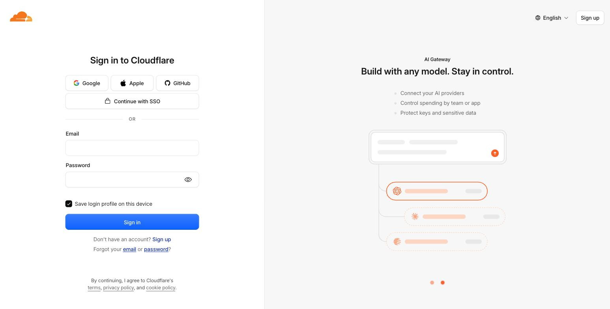
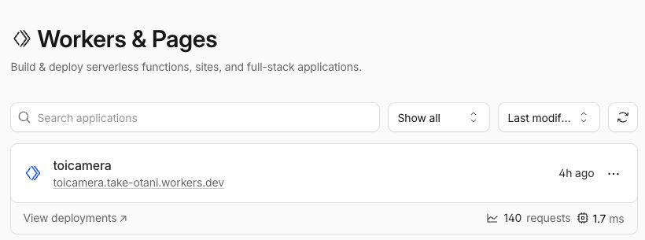
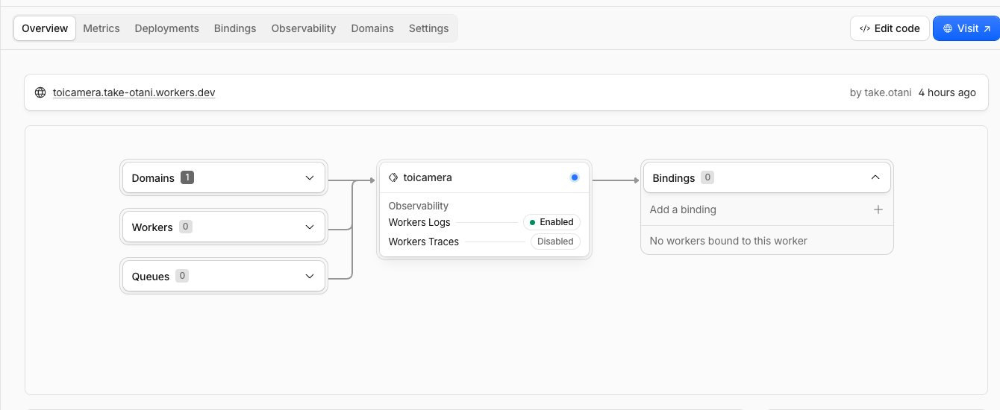
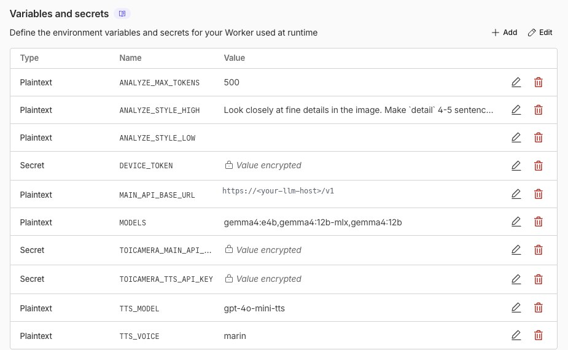
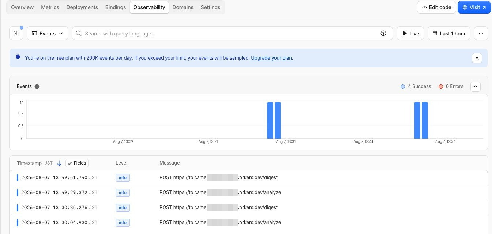

ToiCamera never talks to OpenAI directly. ToiCamera calls a small Cloudflare Worker that holds every API key, defines the model menu, picks the TTS voice and answers with strict JSON. You deploy it under your own free Cloudflare account — the whole system is yours. No shared backend, no third-party server. ToiCamera が OpenAI と直接通信することはありません。ToiCameraが呼ぶのは小さな Cloudflare Worker — API キーを保管し、モデルメニューを定義し、TTS の声を決め、 厳密な JSON で応答します。これを自分の無料 Cloudflare アカウントにデプロイすれば、 システム全体があなたのもの。共有バックエンドも第三者サーバーもありません。 ToiCamera 从不直接与 OpenAI 通信。ToiCamera调用的是一个小小的 Cloudflare Worker — 它保管所有 API 密钥、定义模型菜单、决定 TTS 音色, 并以严格的 JSON 应答。把它部署到你自己的免费 Cloudflare 账号下, 整套系统就完全属于你。没有共享后端,没有第三方服务器。
If you use an AI coding agent (Claude Code, Cursor, Codex CLI, …), paste this prompt and it will walk the whole setup with you — deploy, secrets, token, verification. It never needs to see your OpenAI key on screen (wrangler prompts for secrets on stdin). AI コーディングエージェント(Claude Code・Cursor・Codex CLI など)を使っているなら、 下のプロンプトを貼るだけ。デプロイ→シークレット設定→トークン生成→検証まで対話で進めてくれます。 OpenAI キーが画面に出ることはありません(wrangler が非表示入力で受け取ります)。 英語のまま貼って OK — エージェントは日本語で応答してくれます。 如果你使用 AI 编程助手(Claude Code、Cursor、Codex CLI 等), 只需粘贴下面这段提示词,它就会带你完成全部设置 — 部署、密钥、令牌、验证。 你的 OpenAI 密钥不会出现在屏幕上(wrangler 通过隐藏输入接收)。直接粘贴即可,助手会用中文回应。
You are setting up the AI relay Worker for ToiCamera
(https://github.com/aieo-product/ToiCamera) on MY Cloudflare account.
Do this, asking me for input only when marked [ASK]:
0. [ASK] Which AI backend do I want?
(a) OpenAI (b) any OpenAI-compatible API (OpenRouter, Groq, DeepSeek,
a local server behind a tunnel, ...) (c) Anthropic Claude for vision
1. git clone https://github.com/aieo-product/ToiCamera && cd ToiCamera/worker
2. npm install
3. Configure vars in wrangler.jsonc for my choice:
(a) leave the defaults
(b) "MAIN_API_BASE_URL": "<the API base, e.g. https://openrouter.ai/api/v1>"
"MODELS": "<comma-separated model ids to show on ToiCamera>"
"ANALYZE_MODEL": "<default model id>"
(c) "ANALYZE_PROVIDER": "anthropic", "MODEL": "<claude model id>"
(the same TOICAMERA_MAIN_API_KEY secret then holds my Anthropic key)
4. npx wrangler deploy
- If wrangler is not logged in, run `npx wrangler login` first and tell me
to approve it in the browser.
- Record the printed Worker URL, e.g. https://toicamera.SUBDOMAIN.workers.dev
5. Set the secrets one by one with `npx wrangler secret put NAME`
(I paste values into the hidden prompt myself; never echo them):
- TOICAMERA_MAIN_API_KEY → [ASK] the API key of my chat/vision backend
- TOICAMERA_TTS_API_KEY → [ASK] an OpenAI-compatible key for voice STT/TTS
(audio always uses AUDIO_API_BASE_URL, default api.openai.com — skip
if I don't need voice; ToiCamera then falls back to chirps)
- DEVICE_TOKEN → generate with `openssl rand -hex 16`, show it to
me, and remind me THIS is the value I type into ToiCamera's WiFi settings
portal (Settings → WiFi → scan QR → http://192.168.4.1).
6. Verify:
curl -s https://<worker-url>/config -H "x-device-token: <token>"
→ expect {"models":[...],"voice":"...","tts":true}
7. Print a summary: Worker URL + device token + the two lines for
firmware/stopwatch/secrets.ini:
-DWORKER_URL=\"https://<worker-url>\"
-DDEVICE_TOKEN=\"<token>\"
Run this one on the machine that hosts the LLM. It assumes Ollama
with the vision-capable gemma4 — swap in whatever local LLM you like and
tie it to your Worker.
LLM を動かしている母艦の上で実行します。ビジョン対応の
gemma4(Ollama)を前提にしていますが、好きなローカル LLM に読み替えて
Worker に紐づけてください。
请在运行 LLM 的那台电脑上执行。示例以支持视觉的
gemma4(Ollama)为前提 — 可以换成任何你喜欢的本地 LLM 并绑定到你的 Worker。
You are wiring the LLM running on THIS machine into my ToiCamera Worker
(repo: https://github.com/aieo-product/ToiCamera, worker already deployed).
Assume Ollama with the vision-capable model gemma4:12b — if I name another
local model or server, use that instead.
1. Check the local server: `ollama list` has the model (else `ollama pull
gemma4:12b`) and `curl http://localhost:11434/v1/models` answers.
2. Expose it with a Cloudflare Tunnel. Quick test:
cloudflared tunnel --url http://localhost:11434 --http-host-header "localhost:11434"
(--http-host-header matters — Ollama rejects foreign Host headers.)
For a permanent setup create a named tunnel instead:
cloudflared tunnel create toicamera-llm
cloudflared tunnel route dns toicamera-llm llm.<my-domain>
write a config with ingress → http://localhost:11434 and
originRequest.httpHostHeader "localhost:11434", then
cloudflared tunnel run toicamera-llm (keep it running)
3. Verify through the tunnel: curl https://<tunnel-host>/v1/models
4. In ToiCamera/worker/wrangler.jsonc set:
"MAIN_API_BASE_URL": "https://<tunnel-host>/v1"
"MODELS": "gemma4:12b" // list only models this server has
"ANALYZE_MODEL": "gemma4:12b"
then `npx wrangler deploy`.
5. E2E test: POST a small JPEG to <worker-url>/analyze with headers
x-device-token + X-Model: gemma4:12b → expect {"caption":...,"detail":...}
(the first call is slow while the model loads into memory).
Notes: /analyze needs a VISION-capable model. Voice STT/TTS stays on
AUDIO_API_BASE_URL (OpenAI) and keeps working unchanged. If the tunnel
stops, redeploy with the OpenAI defaults to switch back.
sk-… string somewhere safe)
OpenAI API キー — platform.openai.com/api-keys で「Create new secret key」を押し、sk-… の文字列を安全な場所に控える
OpenAI API 密钥 — 在 platform.openai.com/api-keys 点击「Create new secret key」,把 sk-… 字符串保存到安全的地方npx runs wrangler, no global install needed
PC に Node.js 18 以上 — wrangler は npx で動くのでグローバルインストール不要
电脑上装有 Node.js 18+ — 用 npx 运行 wrangler,无需全局安装# in your clone of the repo
cd worker
npm install
npx wrangler deploy # first run opens a browser → click “Allow” to log inThe deploy output prints your Worker URL — keep it, the firmware needs it in step 3: デプロイ出力にあなたの Worker URL が表示されます — ステップ 3 で使うので控えておきます: 部署输出会打印你的 Worker URL — 记下来,第 3 步固件要用:
Uploaded toicamera (2.59 sec)
Deployed toicamera triggers (0.91 sec)
https://toicamera.<your-subdomain>.workers.dev
workers.dev URL on the card is the one ToiCamera calls.デプロイ後、ダッシュボードの Compute (Workers) → Workers & Pages に Worker が現れます。カードの workers.dev URL がToiCameraの呼び先です。部署后,Worker 会出现在控制台的 Compute (Workers) → Workers & Pages 里。卡片上的 workers.dev URL 就是ToiCamera要调用的地址。
The Worker reads three secrets. From the terminal — each command prompts on stdin, so keys never touch your shell history: Worker が読むシークレットは 3 つ。ターミナルから — 各コマンドは非表示入力で受け取るので、キーがシェル履歴に残りません: Worker 只读取 3 个密钥。在终端执行 — 每条命令都通过隐藏输入接收,密钥不会留在 shell 历史里:
npx wrangler secret put TOICAMERA_MAIN_API_KEY # your AI backend's API key
npx wrangler secret put TOICAMERA_TTS_API_KEY # key for voice STT/TTS (OpenAI; often the same key)
npx wrangler secret put DEVICE_TOKEN # a password YOU make up, e.g. `openssl rand -hex 16`| Secret | What it is説明说明 |
|---|---|
TOICAMERA_MAIN_API_KEY | API key of your main chat/vision backend (vision, Q&A, digest). OpenAI by default — or the key of whatever OpenAI-compatible API MAIN_API_BASE_URL points atメインのチャット/ビジョン用 API キー(画像解析・Q&A・要約)。既定は OpenAI — MAIN_API_BASE_URL を別の互換 API に向けたときはそのキー主要聊天/视觉后端的 API 密钥(视觉、问答、摘要)。默认是 OpenAI — 若 MAIN_API_BASE_URL 指向其他兼容 API,则填那个 API 的密钥 |
TOICAMERA_TTS_API_KEY | Key for voice STT/TTS (goes to AUDIO_API_BASE_URL, default OpenAI). Usually the same key as above; skip it if you don't need voice — ToiCamera falls back to chirps音声 STT/TTS 用キー(AUDIO_API_BASE_URL、既定 OpenAI へ)。通常は上と同じキーで OK。音声不要ならスキップ可 — ToiCameraはピコピコにフォールバック语音 STT/TTS 密钥(发往 AUDIO_API_BASE_URL,默认 OpenAI)。通常与上面同一个即可;不需要语音可跳过 — ToiCamera会退回哔哔声 |
DEVICE_TOKEN | A shared secret you invent. ToiCamera sends it as X-Device-Token; the Worker rejects everything else. This is the value you type into ToiCamera's WiFi settings portal (Settings → WiFi → scan QR → http://192.168.4.1)自分で決める合言葉。ToiCameraが X-Device-Token として送り、一致しないリクエストは Worker が拒否します。ToiCameraの WiFi 設定画面(ポータル)の「デバイストークン」欄に入力するのがこの値です(設定 → WiFi → QR → http://192.168.4.1)由你自己定的共享口令。ToiCamera以 X-Device-Token 发送,不匹配的请求会被 Worker 拒绝。在ToiCamera WiFi 设置门户里填的就是这个值(设置 → WiFi → 扫码 → http://192.168.4.1) |
Prefer clicking? The dashboard does the same thing: your Worker → Settings → Variables and Secrets → Add, choose type Secret: クリック派なら、ダッシュボードからも同じことができます: Worker → Settings → Variables and Secrets → Add で、タイプに Secret を選択: 喜欢点鼠标?控制台也能做同样的事: Worker → Settings → Variables and Secrets → Add,类型选 Secret:

Two values connect the firmware to your Worker: the URL from step 1 and the device token from step 2. ファームと Worker をつなぐのは 2 つの値: ステップ 1 の URL と、ステップ 2 のデバイストークンです。 连接固件与 Worker 的只有两个值:第 1 步的 URL 和第 2 步的设备令牌。
firmware/stopwatch/secrets.ini
(copy from secrets.ini.example; gen-secrets.sh automates it):
ビルド時 — 両方を firmware/stopwatch/secrets.ini に記載
(secrets.ini.example をコピー。gen-secrets.sh で自動化も可):
构建时 — 把两个值写进 firmware/stopwatch/secrets.ini
(从 secrets.ini.example 复制;gen-secrets.sh 可自动生成):
-DWORKER_URL=\"https://toicamera.<your-subdomain>.workers.dev\"
-DDEVICE_TOKEN=\"<the token you made up>\"http://192.168.4.1 →
the device token field. Stored in NVS, overrides the build-time value.
This field expects the DEVICE_TOKEN shared secret — not an OpenAI key.
後から実機で — トークン(URL は不可)はToiCameraからも設定できます:
設定 → WiFi → QR を読む → http://192.168.4.1 →「デバイストークン」欄。
NVS に保存され、ビルド時の値を上書きします。入れるのは DEVICE_TOKEN の合言葉 — OpenAI キーではありません。
或在运行时 — 令牌(URL 不行)也可以之后从ToiCamera设置:
设置 → WiFi → 扫描二维码 → http://192.168.4.1 →「设备令牌」栏。
保存在 NVS 中,覆盖构建时的值。这里填的是 DEVICE_TOKEN 口令 — 不是 OpenAI 密钥。curl -s "https://toicamera.<your-subdomain>.workers.dev/config" \
-H "x-device-token: <your token>"Expected:期待される応答:预期结果:
{"models":["gpt-5.6-terra","gpt-5.6-luna"],"voice":"marin","tts":true}| Response応答响应 | Meaning意味含义 |
|---|---|
401 | Token mismatch — header value must equal the DEVICE_TOKEN secretトークン不一致 — ヘッダー値は DEVICE_TOKEN シークレットと同じ必要があります令牌不匹配 — 请求头的值必须与 DEVICE_TOKEN 密钥一致 |
429 + reset_jst | OpenAI free daily quota exhausted; ToiCamera shows the reset timeOpenAI の無料枠を使い切り。ToiCameraにリセット時刻が表示されますOpenAI 免费每日额度用尽;ToiCamera会显示重置时间 |
400 empty or truncated image | (on /analyze) the test file is smaller than 128 bytes(/analyze で)テストファイルが 128 バイト未満(/analyze 时)测试文件小于 128 字节 |
Watch live logs while testing from the device: npx wrangler tail —
or in the dashboard, the Worker's Observability tab shows every request ToiCamera makes:
実機からのテスト中は npx wrangler tail でライブログを確認 —
またはダッシュボードの Observability タブに、ToiCameraからの全リクエストが記録されます:
从设备测试时用 npx wrangler tail 看实时日志 —
或者在控制台的 Observability 标签页查看ToiCamera发来的每个请求:

POST /analyze (and the daily summary as /digest). 0 errors = ToiCamera and your Worker are talking.シャッターを押すたびに POST /analyze(日次要約は /digest)が並びます。エラー 0 = ToiCameraと Worker が正しく通信中。每按一次快门就会出现一条 POST /analyze(每日摘要是 /digest)。0 错误 = ToiCamera和 Worker 通信正常。ToiCamera never hardcodes model names: on boot it fetches
GET /config and shows whatever your Worker offers in
Settings → Model. The menu is one var in worker/wrangler.jsonc:
ToiCameraはモデル名をハードコードしません。起動時に GET /config を取得し、
Worker が提供するものをそのまま設定 → モデルに表示します。メニューは worker/wrangler.jsonc の変数 1 行:
ToiCamera从不硬编码模型名:开机时拉取 GET /config,
把你的 Worker 提供的内容原样显示在设置 → 模型里。菜单就是 worker/wrangler.jsonc 里的一个变量:
"MODELS": "gpt-5.6-terra,gpt-5.6-luna", // comma-separated — this IS the Settings menuEdit, npx wrangler deploy, reboot ToiCamera — done. The same applies to
the speech voice: ToiCamera only chooses chirps or TTS; which voice TTS
speaks with is your Worker's TTS_VOICE var.
編集して npx wrangler deploy、ToiCameraを再起動すれば反映完了。声も同じ考え方で、
ToiCameraが選ぶのはピコピコか TTS かだけ。TTS が話す声は Worker の TTS_VOICE 変数で決まります。
改完执行 npx wrangler deploy,重启ToiCamera即生效。语音同理:
ToiCamera只选哔哔声还是 TTS;TTS 用什么音色由 Worker 的 TTS_VOICE 变量决定。
Everything the Worker calls goes through the OpenAI-compatible
MAIN_API_BASE_URL var — so the “AI” can be a model running on your own machine:
Worker の呼び先はすべて OpenAI 互換の MAIN_API_BASE_URL 変数経由。
つまり「AI」を母艦 PC で動くモデルにもできます:
Worker 的所有调用都经过 OpenAI 兼容的 MAIN_API_BASE_URL 变量 —
所以「AI」完全可以是跑在你自己电脑上的模型:
ollama serve (endpoint http://localhost:11434/v1)
OpenAI 互換 API のローカルサーバーを起動 — 例: ollama serve(エンドポイント http://localhost:11434/v1)
运行一个 OpenAI 兼容 API 的本地服务 — 例如 ollama serve(端点 http://localhost:11434/v1)cloudflared tunnel --url http://localhost:11434 → you get a public https://….trycloudflare.com host (or use a named tunnel on your own domain)
公開する: cloudflared tunnel --url http://localhost:11434 → 公開ホスト https://….trycloudflare.com が発行されます(独自ドメインの named tunnel でも可)
暴露到公网:cloudflared tunnel --url http://localhost:11434 → 得到公开主机 https://….trycloudflare.com(也可用自有域名的命名隧道)"MAIN_API_BASE_URL": "https://<tunnel-host>/v1",
"MODELS": "gemma3:12b", // whatever `ollama list` shows
"ANALYZE_MODEL": "gemma3:12b" // default when the device sends noneAUDIO_API_BASE_URL, default api.openai.com) — speech keeps working
even while chat runs on a chat-only local server.
音声(STT/TTS)はあえて別のベース URL(AUDIO_API_BASE_URL、既定 api.openai.com)を使います —
チャット専用のローカルサーバーでも音声機能はそのまま動きます。
语音 STT/TTS 特意走独立的基址(AUDIO_API_BASE_URL,默认 api.openai.com) —
即使聊天跑在只支持对话的本地服务上,语音功能也不受影响。response_format: json_schema) varies by server; Ollama ≥ 0.5 handles it.
/analyze には画像対応(vision)モデルを選んでください(写真を受け取るため)。
構造化出力(response_format: json_schema)対応はサーバー次第 — Ollama 0.5 以降なら対応しています。
/analyze 需要选支持视觉的模型(它要接收照片)。
结构化输出(response_format: json_schema)的支持因服务而异;Ollama ≥ 0.5 可以处理。setInsecure() (no CA pinning). Fine for a hobby build that only sends a photo and a token; pin the root CA if you fork this for anything serious.
デバイス↔Worker は HTTPS ですが、ファームは setInsecure()(CA ピン留めなし)。写真とトークンしか送らないホビー用途なら十分 — 本格用途にフォークするならルート CA をピン留めしてください。
设备↔Worker 走 HTTPS,但固件使用 setInsecure()(无 CA 固定)。对只发送照片和令牌的爱好项目足够 — 若要正式使用请固定根 CA。TOI_AP_PASS (ToiCamera AP password) before deploying your own — anyone who joins the ToiCamera AP can reach the setup portal.
自分用にデプロイする前に TOI_AP_PASS(ToiCameraの AP パスワード)を変更してください — AP に入れた人は設定ポータルに到達できます。
部署自己的版本前请修改 TOI_AP_PASS(ToiCamera AP 密码) — 任何接入ToiCamera AP 的人都能打开设置门户。